pkglist <- c( "shiny","bslib", # basic shiny pkgs
"ggplot2","plotly","sf","leaflet", # interactive plots
"here", "usethis","dplyr", # data manipulation and project management
"DT","gt","gtsummary", # interactive tables and summary tables
"modeldata", # sample data
"ellmer","shinychat","querychat") # LLM integration
# install packages if not already installed
new.packages <- pkglist[!(pkglist %in% installed.packages()[,"Package"])]
if(length(new.packages)) install.packages(new.packages)Shiny Your Research
Building Interactive Dashboards in R
Rory Chen
2026-07-10
1. Introductions and Scene Setting
1.1 Welcome
- Rory Chen, MSc, UNSW Sydney, Australia
- Ana W. Capuano, PhD, Univerity of Chicago, USA
- Sarah Bauermeister, PhD, Oxford University, UK
- Ashleigh Vella, PhD, UNSW Sydney, Australia
- Nikita Keshena Husein, UNSW Sydney, Australia
- Mai Ho, UNSW Sydney, Australia
Attendance at this conference was supported by an AAIC 2026 Conference Fellowship.
1.2 Today’s agenda
The workshop will run for 4 hours, 1-5 pm.
1:00 - 1:30 p.m. - Introductions and Scene Setting
1:30 - 2:00 p.m. - Theory and Real-World App Demo
2:00 - 3:00 p.m. - Guided Practice: Build Your First Shiny App
3:00 - 3:30 p.m. - Break
3:30 - 4:30 p.m. - Independent Hands-On Exercise
4:30 - 5:00 p.m. - Group Sharing and Wrap-Up
1.3 Why use shiny for your research
Shinyis an R package that makes it easy to buildinteractiveweb applications (apps) straight from R. .Integration with R: R users can build web applications without HTML/CSS/JS knowledge and leverage the full power of R’s data manipulation and visualization capabilities.Accessibility: Shiny apps can be easily shared via URLs, making research findings accessible to a wider audience.Engagement: Interactive visualizations and user interfaces can enhance engagement, great for presentations, teaching, collaboration and moreCustomization: Shiny offers extensive customization options, enabling researchers to tailor their applications to specific research questions and audiences.
… and more!
1.4 Learning Objectives
By the end of this workshop, you will be able to:
- Understand the fundamental concepts and features of
shinypackage. - Create an interactive and dynamic
shinydashboard following a guided, step-by-step coding exercise. - Design reproducible and scalable
shinymodules using structured development practices. - Independently apply
shinyto present own scientific outputs in an engaging, accessible format. - Test the integration of large language models (LLMs) into Shiny applications using the
ellmerandquerychatpackage.
1.5 Setup
- You are comfortable coding in R and R Studio
- No prior knowledge of Shiny apps required.
- Access Github: https://github.com/RoryChenXY/aaic2026-shiny-research
- Install the required package if you haven’t already
- Access your Anthropic key and save it to .Renviron
- If you have any trouble, please raise your hand, one of the facilitators will come to assist you.
1.5.1 Setup - Projects
- In R Studio, go to “File” -> “New Project” (left top corner)
- Choose “New Directory” -> “New Project”
- Choose location and enter
Directory name(e.g. “aaic2026-shiny-research”) - Put all the downloaded files in the new project directory
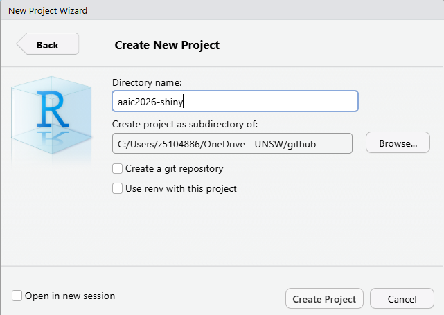
New Project
1.5.2 Setup - Packages
- Open
setup.Rand run the code to install the required packages for the workshop.
1.5.3 Setup - API keys (Optional)
- Restart R Studio to make sure the API keys are loaded.
- You can check if the key is loaded by running
Sys.getenv("ANTHROPIC_KEY")in the console. - It should return your API key.
2. Theory and Basics
2.1 Anatomy of a Shiny app
Shiny is an R package that makes it easy to build interactive web applications (apps) straight from R.
Usually, a Shiny app consists of 3 main components:
UI (User Interface): How your app looksServer: How your app worksShiny app object: a call toshinyApp(ui=ui, server=server)function that put ui and server components together to create the shiny app.
2.1.1 Hello, World!
- Open and run
./examples/01-helloworld.R - This is the most basic Shiny app you can create.
2.1.1 Hello, World!
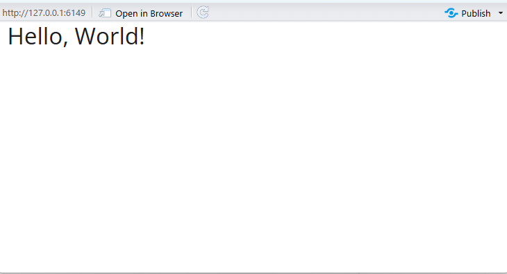
Hello World!
2.1.2 Hello, Name!
- Open and run
./examples/02-helloname.R - Inside the ui we define:
textInputtextOutput
- Define the output in server function - it is wrapped in a call to
renderTextto indicate that:- It is
"reactive"and therefore should be automatically re-executed when inputs (input$name) change - Its output type is a text
- It is
2.1.2 Hello, Name!
library(shiny)
library(bslib)
# UI -----
ui <- bslib::page_fluid(
h1("Hello, World!"),
textInput(inputId = 'name',
label = 'Your Name:'),
textOutput('greeting')
)
# Server -----
server <- function(input, output, session) {
output$greeting <- renderText({
paste('Hello, ', input$name, "!", sep = '')
})
} 2.1.2 Hello, Name!
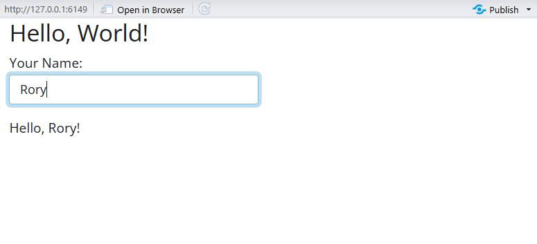
Hello Name
2.1.3 Hello, Shiny!
The Shiny package has 11 built-in examples. Each example is a self-contained Shiny app. You can run these examples to see how different Shiny features work in practice. Rstudio provides a collection of Shiny examples: https://github.com/rstudio/shiny-examples
- Open and run any example from
./examples/00-helloexamples.R
library(shiny)
runExample("01_hello") # a histogram
runExample("02_text") # tables and data frames
runExample("03_reactivity") # a reactive expression
runExample("04_mpg") # global variables
runExample("05_sliders") # slider bars
runExample("06_tabsets") # tabbed panels
runExample("07_widgets") # help text and submit buttons
runExample("08_html") # Shiny app built from HTML
runExample("09_upload") # file upload wizard
runExample("10_download") # file download wizard
runExample("11_timer") # an automated timer2.1.3 Hello, Shiny! - UI
- We will start with the Hello Shiny example.
- Open and run
./examples/03-helloshiny.R - The UI provides two main components:
- A
sidebarwith asliderInputto control the number of bins in the histogram - A
plotOutputto display the plot
- A
ui <- bslib::page_sidebar(
# App title ----
title = "Hello Shiny!",
# Sidebar panel for inputs ----
sidebar = bslib::sidebar(
# Input: Slider for the number of bins ----
sliderInput(
inputId = "bins",
label = "Number of bins:",
min = 1, max = 50,value = 30
)
),
# Output: Histogram ----
plotOutput(outputId = "distPlot")
)2.1.3 Hello, Shiny! - Server
- This expression generates a histogram of the Faithful Data with requested number of bins
- It is wrapped in a call to
renderPlotto indicate that:- It is
"reactive"and therefore should be automatically re-executed when inputs (input$bins) change - Its output type is a plot
- It is
2.1.3 Hello, Shiny! - App
Drag the slider to see how the histogram changes with different number of bins.
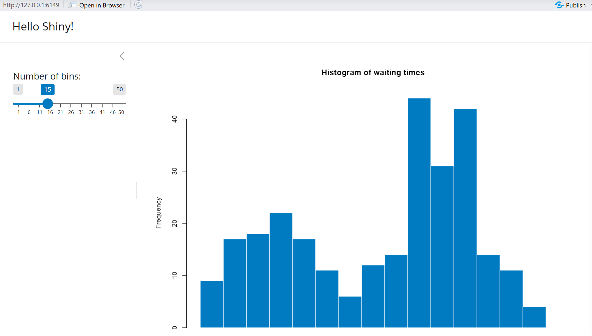
Hello Shiny!
2.1.4 Hello, AAIC! - Your turn
If you have any trouble, please raise your hand, one of the facilitators will come to assist you.
- Open
./examples/exercises/04-helloaaic.R - UI
- Change the title to “Hello AAIC!”
- In sidebar, add
textInputto ask for the user’s name - In the main panel, add
textOutputto greet the user
- Server
- Define the greeting output to display a personalized greeting using the user’s name
- e.g. “Welcome to AAIC, [name]!”
- Change the histogram color to
#4a0d66- AAIC purple
- You can also find the solution in
./examples/solution/04-helloaaic-solution.R
2.1.4 Hello, AAIC! - Solution
ui <- page_sidebar(
# App title ----
title = "Hello AAIC!",
# Sidebar panel for inputs ----
sidebar = sidebar(
sliderInput(),
# Input: add textInput to ask for the user’s name ----
textInput(inputId = "name",
label = "Your Name:")
),
# Output: add textOutput to greet the user ----
textOutput("greeting"),
plotOutput(outputId = "distPlot")
)2.1.4 Hello, AAIC! - Solution
server <- function(input, output) {
# Define the greeting output
output$greeting <- renderText({
paste("Welcome to AAIC, ", input$name, "!", sep = "")
})
output$distPlot <- renderPlot({
x <- faithful$waiting
bins <- seq(min(x), max(x), length.out = input$bins + 1)
#Change the histogram color to #4a0d66 - AAIC purple
hist(x, breaks = bins, col = "#4a0d66", border = "white",
xlab = "Waiting time to next eruption (in mins)",
main = "Histogram of waiting times")
})
}2.1.4 Hello, AAIC! - App
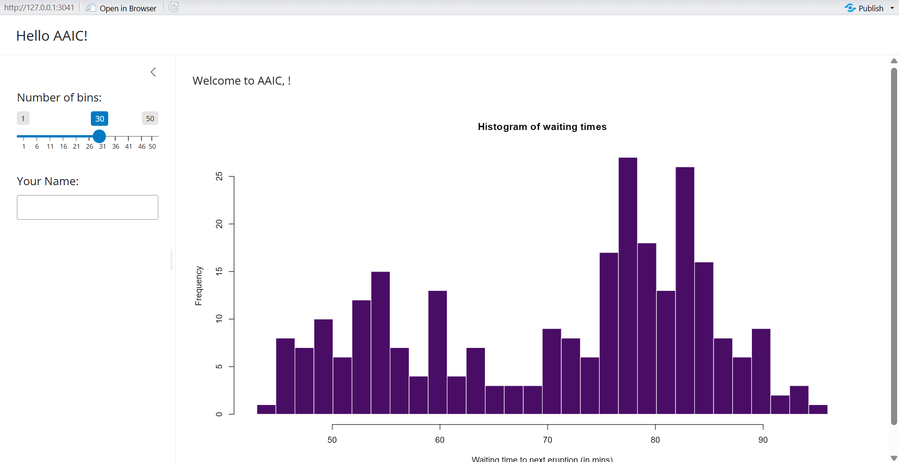
Hello AAIC!
2.1.5 Wrap-up: UI & Server
UI
UI Contains elements such as:
- Layout structures (sidebars)
- Inputs (text boxes, sliders, buttons)
- Outputs (plots, tables)
Server
- Performs calculations.
- Contains the logic to respond to user inputs, and update outputs.
- Communicates with the UI to dynamically render outputs.
2.2 Shiny UI Components
Inputs
- Action Buttons
- Checkbox
- Date
- Text
- Numeric
- Slider
…
Outputs
- Text
- Tables
- Plots
- Images
…
Layout
- Sidebar
- Tabs and tabset
- Cards
- Value Boxes
- conditionalPanel
2.2.1 Shiny UI - Inputs
- Web elements that users can interact with and
sendmessages to the Shiny app. - The Shiny Widgets Gallery https://shiny.posit.co/r/gallery/widgets/widget-gallery/ provides templates that you can use to quickly add widgets to your Shiny apps.
- Open and run
./examples/05-uiinput.R. It lists some commonly used widgets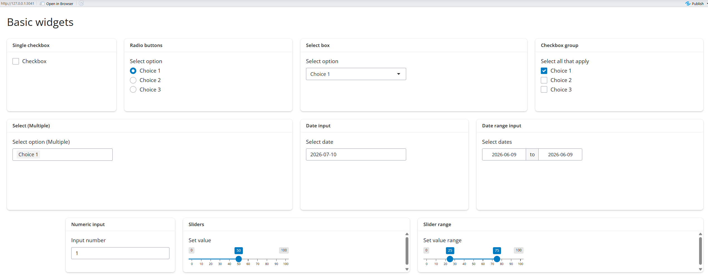
2.2.2 Shiny UI - Inputs Exercises
If you have any trouble, please raise your hand, one of the facilitators will come to assist you.
- Open and run
./examples/05-uiinput.R - Change the
choicesto options you like and re-run the app. - Example:
- Change the number range of the slider input and re-run the app.
2.2.3 Shiny UI - Output
- To display a reactive output, there are two steps:
- Add an R object to your user interface.
- Define the output in the server function, wrapped in a call to
render*()to indicate that it is reactive and specify its output type.
- Define the output in the server function, wrapped in a call to
| Output function in UI | Creates | Render function in Server |
|---|---|---|
textOutput |
text | renderText |
verbatimTextOutput |
text | renderText or renderPrint |
plotOutput |
plot | renderPlot |
dataTableOutput |
DataTable | renderDataTable |
tableOutput |
table | renderTable |
uiOutput |
raw HTML | renderUI |
imageOutput |
image | renderImage |
2.2.4 Shiny UI Exercises 1 - Your turn!
For this exercise, we will use the
ad_datafrom packagemodeldata.Description: Alzheimer’s disease data
Details: Craig-Schapiro et al. (2011) describe a clinical study of
333patients. Data collected on each subject included:Demographic characteristics such as
ageandgenderApolipoprotein E genotype
Protein measurements of Abeta,
Tau, andpTauProtein measurements of 124 exploratory biomarkers, and
Clinical dementia scores
You can explore the data with:
2.2.4 Shiny UI Exercises 1 - Your turn!
If you have any trouble, please raise your hand, one of the facilitators will come to assist you.
We have used plotOutput and textOutput in previous examples. Now let’s try some other output types.
- Open
./examples/exercises/06-uitables.R - a
sliderInput()to control how many rows are displayed intableOutput tableOutput()withrenderTable()dataTableOutput()withrenderDataTable()DTis a really powerful package for rendering interactive tables in Shiny. You can explore the documentation and examples here: https://rstudio.github.io/DT/shiny.html- You can also find the solution in
./examples/solution/06-uitables-solution.R
2.2.4 Shiny UI Exercises 1 - Solution
UI
2.2.4 Shiny UI Exercises 1 - Solution
Server
2.2.4 Shiny UI Exercises 1 - App
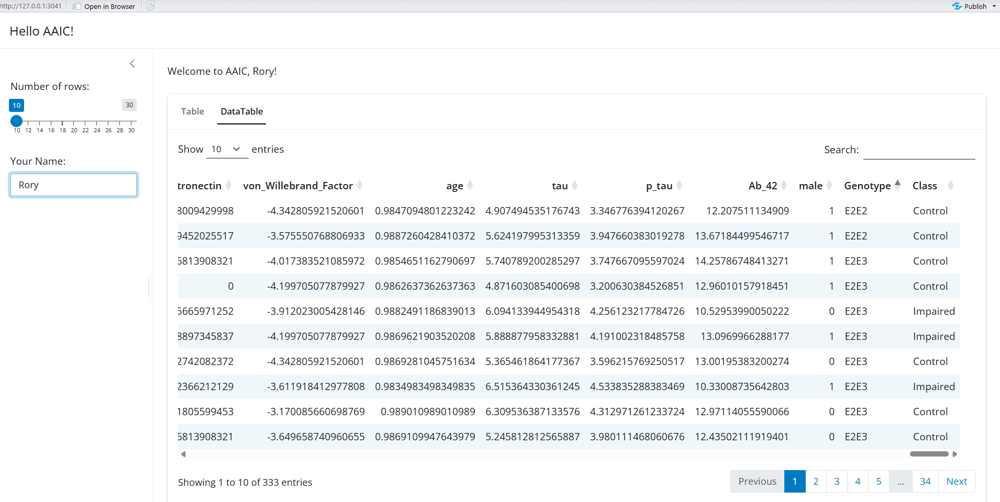
06-uitables.R
2.2.5 Shiny UI - Layout sidebar
- Layout controls where things appear in your app
- A most common layout is
sidebar(04_helloaaic.R)
ui <- page_sidebar(
# App title ----
title = "Hello AAIC!",
# Sidebar panel for inputs ----
sidebar = sidebar(
# Input: Slider for the number of bins ----
sliderInput(
inputId = "bins",
label = "Number of bins:",
min = 1, max = 50,value = 30
),
textInput(inputId = "name",
label = "Your Name:")
),
# Output: Histogram ----
textOutput("greeting"),
plotOutput(outputId = "distPlot")
)2.2.5 Shiny UI - Layout sidebar
Layout controls where things appear in your app
A most common layout is
sidebar(04_helloaaic.R)
04_helloaaic.R
2.2.6 Shiny UI - Layout Cards
- You can use
card()from{bslib}to group multiple elements into a single element that has its own properties. - You can then use the card to place the group of elements within the layout using
layout_columns(), see05-uiinput.R.
2.2.7 Shiny UI - Layout Tabs
- Tabs can distribute large amount of information to stackable tab panels.
- Each tab is created with
nav_panel(), and the tabs are placed inside a navigation layout. bslibpackage provides many styles:navset_underline()andnavset_card_underline()navset_tab()andnavset_card_tab()navset_pill_list()navset_pill()andnavset_card_pill()navset_hidden()navset_bar()
2.2.7 Shiny UI - Layout Tabs
- Tabs can distribute large amount of information to stackable tab panels.
- Each tab is created with
nav_panel(), and the tabs are placed inside a navigation layout. - We used
navset_card_underlinein the06-uitables.Rexample.
2.2.7 Shiny UI - Layout Tabs
- Tabs can distribute large amount of information to stackable tab panels.
- Each tab is created with
nav_panel(), and the tabs are placed inside a navigation layout. - We used
navset_card_underlinein the06-uitables.Rexample.
06-uitables.R
2.2.8 Your turn - UI Exercises 2
If you have any trouble, please raise your hand, one of the facilitators will come to assist you.
- Open
./examples/exercises/07-uitabs.R - For this exercise, we will add a Plot tab to the previous example.
- You can also refer to
03-helloshiny.Rfor how to create a histogram.- In
ui,sidebar(), add a newsliderInputfor number of bins. - In
ui,navset_card_underline(), add a newnav_panel(), and place aplotOutput()inside it. - In
server, add a newrenderPlot()to generate the histogram ofp_tauin thead_datadataset, using the number of bins specified by the new slider input. - Optional goal: Try other plots.
- In
- You can also find the solution in
./examples/solution/07-uitabs-solution.R
2.2.8 Your turn - UI Exercises 2 Solution
UI
2.2.8 Your turn - UI Exercises 2 Solution
Server
2.2.8 Your turn - UI Exercises 2 App
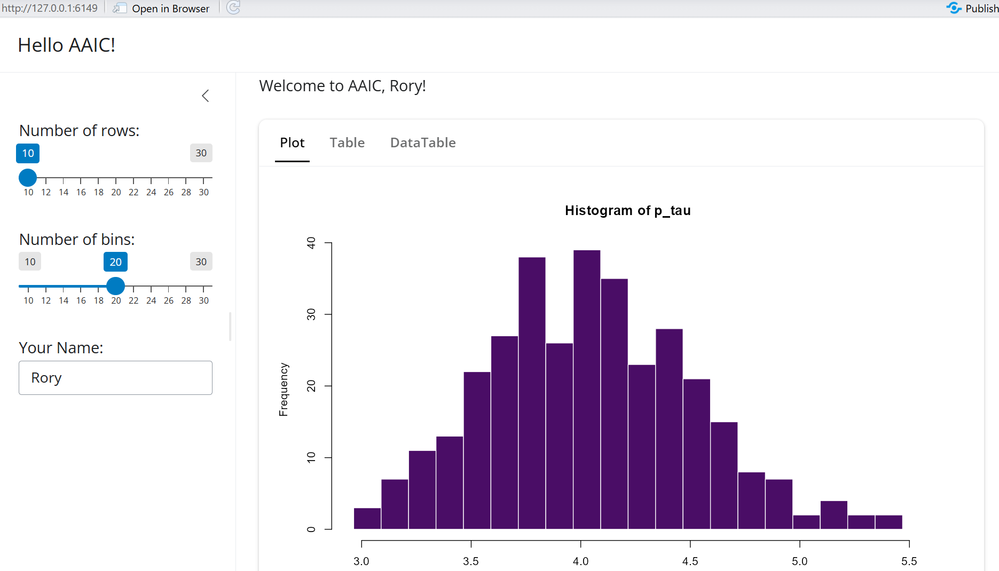
07-uitabs.R
2.3 Shiny Server
What makes shiny
interactive?When you change an input, the server automatically re-runs the relevant code to update the outputs. This is called
reactivity.How to do this?
- Add an R object to your user interface.
- Define the output in the server function, wrapped in a call to
render*()to indicate that it is reactive and specify its output type.
- Define the output in the server function, wrapped in a call to
2.3.1 Reactive Examples
- When we change the name, the greeting text changes
- When we change the number of bins, the histogram changes
- When we change the number of rows, the table changes
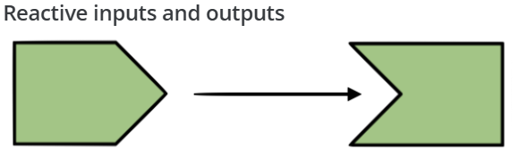
Reactive
2.3.2 Reactive Expression
- A
reactive inputis a user input that comes through a browser interface, typically. - A
reactive outputis something that appears in the user’s browser window, such as a plot or a table of values. - A
reactive expressionsis component between an input and an output. It stores a reusable calculation.
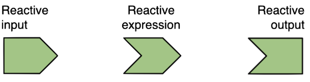
Reactive Expression
2.3.2 Reactive Expression
- Why we need reactive expressions?
- Sometimes the same processed data is needed in several places
- Avoids code duplication
- Improves organization and readability
- Facilitates testing and maintenance
Reactive Expression
2.3.3 Reactive Expression Demo
To illustrate reactivity expression we’re going to use the ad_data once again.
Aiming to build an app that:
Lets user
filterthe data byAPOE genotypeDisplays text to show the
number of observationsin the filtered resultsUpdates the
summary statisticsby filtered resultsUpdates the
plotsby filtered resultsLet’s open
./examples/exercises/08-reactiveexp.R
2.3.3 Reactive Expression Demo
Step 1. Add a UI element selectInput for user to select APOE genotype
Step 2. server: Filter for chosen genotype and save the new data frame as a reactive expression.
To use it later, call it like a function: ad_filtered() in any output that needs the filtered data.
2.3.3 Reactive Expression Demo
Step 3. create the text stating the number of observations in the filtered dataset
2.3.3 Reactive Expression Demo
Step 4. We can create a summary table using the filtered data.
gtsummary creates summary table easily.
output$summary <- render_gt({
ad_filtered() |>
tbl_summary(
by = Class,
type = list(
everything() ~ "continuous",
c(male, Genotype) ~ "categorical"
),
statistic = list(
all_continuous() ~ "{mean} ({sd})",
all_categorical() ~ "{n} ({p}%)"
),
digits = list(
all_continuous() ~ 2,
all_categorical() ~ c(0, 1)),
missing = "no"
) |>
add_overall() |>
as_gt()
}) 2.3.3 Reactive Expression Demo
Step 5. We can create an interactive plot using the filtered data. Just wrapping your ggplot object with ggplotly() from the plotly package will make it interactive.
2.3.3 Reactive Expression Demo App

08-reactiveexp.R
2.3.4 Your turn - Reactive Expression Exercise
If you have any trouble, please raise your hand, one of the facilitators will come to assist you.
- Open
./examples/exercises/08_reactiveexp.R - Add an input to allow user to filter the data by both
genderandAPOE genotype - Updates the reactive expression (
ad_filtered) - Add another
plotwith variables of your choice - You can also find the solution in
./examples/solution/08_reactiveexp-solution.R
2.3.4 Your turn - Reactive Expression Solution
- Add an
checkboxGroupInputto allow user to filter the data by bothgenderandAPOE genotype
- Update the
reactive expression(ad_filtered)
2.3.4 Your turn - Reactive Expression Solution
- Add another
plotwith variables of your choice
UI
Server
2.3.4 Your turn - Reactive Expression Solution
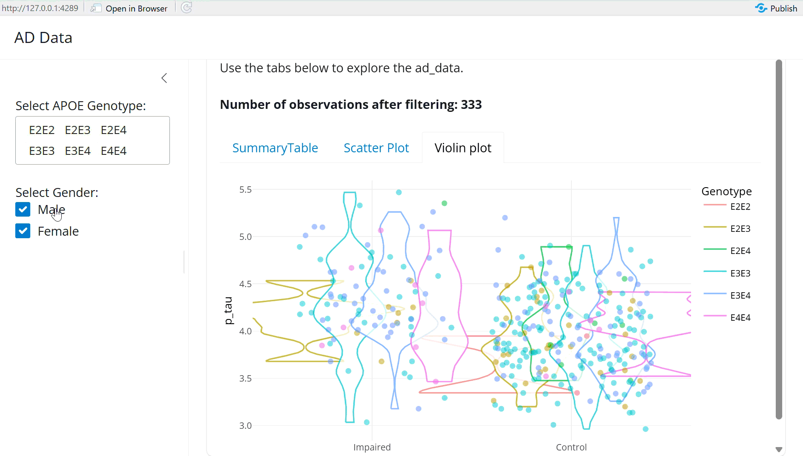
08-reactiveexp-solution.R
3. Real Life Shiny Apps
3.1 DataRepExp
DataRepExp: a R shiny Application that makes Data FAIR for Data Repositories
Paper: The Journal of Open Source Software, 2024
Github: github.com/rorychenxy/DataRepExp
3.2 GLADSE
3.3 GLADSE - querychat
4. Guided Practice: Build Your First Shiny App - Basic
4.1 Goals
Goal: Build a Data Explorer using the OASIS_long_tbl_df from NeuroDataSets.
OASIS_long_tbl_df, is a tibble containing a longitudinal collection of MRI data from 150 subjects aged 60 to 96, obtained as part of the Open Access Series of Imaging Studies (OASIS).
- UI Design: Create a user-friendly interface using
page_sidebar()layout for inputs widgets, andtabsetsfor outputs. - Reactive Expression: Create a reactive expression to be used across multiple output, using
dplyrfor data manipulation - Interactive Outputs: Using
DTandplotlyto create interactive tables and plots - Summary Table: using
gtsummaryto create a summary table for baseline data
4.2 About the data
| Variable | Variable | Description | Type |
|---|---|---|---|
| Subject ID | subject_id |
Unique identifier for each subject | Character |
| MRI ID | mri_id |
Identifier for each MRI session | Character |
| Group | group |
Clinical group classification | Factor |
| Visit | visit |
Visit number for longitudinal assessment | Numeric |
| MR Delay | mr_delay |
Time in days between MRI sessions | Numeric |
| M/F | mf |
Sex of the participant | Factor |
| Hand | hand |
Handedness of the participant | Factor |
| Age | age |
Age in years at the time of the visit | Numeric |
| EDUC | educ |
Years of education | Numeric |
| SES | ses |
Socioeconomic status score | Factor |
| MMSE | mmse |
Mini-Mental State Examination score | Numeric |
| CDR | cdr |
Clinical Dementia Rating score | Factor |
| eTIV | etiv |
Estimated total intracranial volume | Numeric |
| nWBV | nwbv |
Normalised whole-brain volume | Numeric |
| ASF | asf |
Atlas scaling factor | Numeric |
4.3 Basic App Skeleton
Open ./examples/exercises/09-oasis.R.
4.4 UI
- Add inputs widgets to sidebar and output to main panel
 ]
]
4.4.1 UI - sidebar
If you have any trouble, please raise your hand, one of the facilitators will come to assist you.
Add inputs widgets to sidebar
- Filter for age range (
sliderInput) - Filter for Gender (
checkboxGroupInput) - Filter for Socioeconomic status score (
checkboxGroupInput) - Choose x-axis variable (
selectInput) - Choose y-axis variable (
selectInput) - Choose grouping variable (
selectInput)
4.4.2 UI - sidebar solution p1
sidebar = sidebar(
## Filter for age range (slider)
sliderInput(
inputId = "selected_age", label = "Set age range",
min = 60, max = 100, value = c(60, 100)),
## Filter for Gender
checkboxGroupInput(
inputId = "selected_gender",
label = "Select Gender:",
choices = levels(oasis_df$mf),
selected = levels(oasis_df$mf)),
## Filter for Socioeconomic status score
checkboxGroupInput(
inputId = "selected_ses",
label = "Select Socioeconomic Status:",
choices = levels(oasis_df$ses),
selected = levels(oasis_df$ses)),
...
)4.4.2 UI - sidebar solution p2
## Choose x-axis variable
selectInput(inputId = "xvar",
label = "X-axis:",
choices = c("age", "educ"),
selected = "age"),
## Choose y-axis variable
selectInput(inputId = "yvar",
label = "Y-axis:",
choices = c("mmse", "etiv", "nwbv", "asf"),
selected = "mmse"),
## Choose grouping variable
selectInput(inputId = "gvar",
label = "Grouping:",
choices = c("group", "mf", "ses", "cdr"),
selected = "mf")4.4.3 UI - mainpanel
If you have any trouble, please raise your hand, one of the facilitators will come to assist you.
Add output to main panel
- Number of observations (
uiOutput) - summary table (
gt_output) - DT table (
dataTableOutput) - Plotly plot with (
plotlyOutput)
4.4.4 UI - mainpanel solution
card(
card_header("Summary Table and Plots"),
"Use the tabs below to explore the OASIS data.",
uiOutput("filtered_n"),
navset_tab(
nav_panel("SummaryTable", gt_output(outputId = "summary")),
nav_panel("Data", dataTableOutput(outputId = "datadt")),
nav_panel("Scatter plot", plotlyOutput(outputId = "scatterplot"))
))4.5 Server
If you have any trouble, please raise your hand, one of the facilitators will come to assist you.
- Create a reactive expression to filter the data based on user input
- Create outputs that depend on the reactive expression
- Number of observations
- Summary table with
gtsummary DTtablePlotlyscatter plot with selected variables
4.5.1 Create the reactive expression
We use baseline data here (visit == 1)
4.5.2 Building the Outputs - gtsummary table
output$summary <- render_gt({
oasis_filtered() |>
tbl_summary(
by = group,
include = -c(subject_id, mri_id, visit, mr_delay, hand),
type = list(
everything() ~ "continuous",
c(mf, ses, cdr) ~ "categorical"
),
statistic = list(
all_continuous() ~ "{mean} ({sd})",
all_categorical() ~ "{n} ({p}%)"
),
digits = list(
all_continuous() ~ 2,
all_categorical() ~ c(0, 1)),
missing = "no"
) |>
add_overall() |>
as_gt()
}) 4.5.3 Building the Outputs - DT table
- Check https://rstudio.github.io/DT/ for more options
output$datadt <- renderDT({
datatable(
oasis_filtered(),
filter = "top", # Enable built-in filters at the top of the columns
options = list(
pageLength = 15, # Control initial page size
autoWidth = TRUE, # Auto adjusting column width
search = list(smart = TRUE, regex = TRUE), # Enable "smart" space-separated searching globally
scrollX = TRUE # Enable horizontal scrolling for wide data frames
)
)
})4.5.4 Building the Outputs - plotyly
output$scatterplot <- renderPlotly({
p <- ggplot(
oasis_filtered(),
aes(
x = .data[[input$xvar]],
y = .data[[input$yvar]],
colour = .data[[input$gvar]],
text = paste(
"Subject:", subject_id,
"<br>Age:", age,
"<br>Sex:", mf,
"<br>Group:", group
))) +
geom_point(size = 2, alpha = 0.8) +
labs(
title = paste(input$xvar, "and", input$yvar),
x = input$xvar,
y = input$yvar,
colour = input$gvar
) +
theme_minimal()
ggplotly(p, tooltip = "text")
})4.6 Deploy through shinyapps.io
Optional
Refer to https://shiny.posit.co/r/articles/share/shinyapps/
- Create an account on
shinyapps.io - Install and load
rsconnectpackage - Configure
rsconnectwith yourshinyapps.ioaccount - Deploy your app using through
shinyapps.io
5. Advanced Shiny
5.1 Shiny file structures
5.2 Modules
Modulesare reusable pieces of Shiny app logic that can be called multiple times.Why we need modules:
Avoidcode duplicationImproveorganization and readabilityFacilitatetesting and maintenance
A
moduleconsists of aUIfunction and aServerfunction like a mini shiny appTo use a
module, you call the UI function in your main UI and the Server function in your main Server, passing a unique ID to both.
5.2.1 Modules Example
- Open and run
./examples/10-nomodules.R
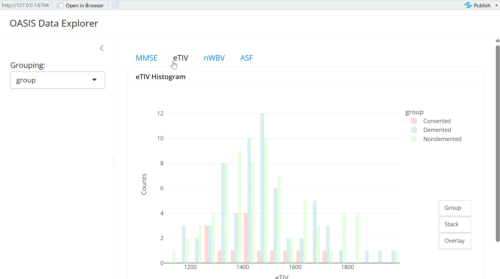
Modules
5.2.1 Modules Example - No module code
10-nomodules.Rhas 200 lines.- In
./examples/11-modhistogram,app.Randhistogram_module.Rtogether have 120 lines.
# Define server ----
server <- function(input, output, session) {
## MMSE Histogram ----
output$mmseplot <- renderPlotly({
p <- plotly::plot_ly(data = oasis_df,x = ~.data[['mmse']],color = ~.data[[input$gvar]],
...)
return(p)
})
## eTIV Histogram ----
output$etivplot <- renderPlotly({
p <- plotly::plot_ly(data = oasis_df, x = ~.data[['etiv']],color = ~.data[[input$gvar]],
...)
return(p)
})
## nWBV Histogram ----
output$nwbvplot <- renderPlotly({
p <- plotly::plot_ly(data = oasis_df, x = ~.data[['nwbv']], color = ~.data[[input$gvar]],
...)
return(p)
})
## eTIV Histogram ----
output$asfplot <- renderPlotly({
p <- plotly::plot_ly(data = oasis_df, x = ~.data[['asf']],color = ~.data[[input$gvar]],
...)
return(p)
})
}5.2.2 Defined Histogram Module
- Like we can define a function to reuse, we can define a module to create a histogram.
- Open
./examples/11_modhistogram/histogram_module.R
## Module UI
histogramUI <- function(id, title) {
ns <- NS(id)
card(
card_header(title),
plotlyOutput(outputId = ns("plot"))
)
}
## Module Server
histogramServer <- function(id, data, variable, grouping_var) {
moduleServer(id, function(input, output, session) {
output$plot <- renderPlotly({
# Get the grouping variable name for the legend
gvar_name <- grouping_var()
p <- plotly::plot_ly(
data = data,
x = ~.data[[variable]],
color = ~.data[[gvar_name]],
colors = "Pastel1",
alpha = 0.6,
hovertemplate = paste(
paste0(toupper(variable), ': %{x}'),
'<br>Counts: %{y}<br>'
)
) |>
plotly::add_histogram() |>
plotly::layout(
xaxis = list(title = toupper(variable)),
yaxis = list(title = "Counts", showgrid = TRUE),
legend = list(title = list(text = gvar_name), orientation = "v"),
updatemenus = list(
list(
x = 1.2,
y = 0.4,
type = "buttons",
buttons = list(
list(
method = "relayout",
args = list("barmode", "group"),
label = "Group"
),
list(
method = "relayout",
args = list("barmode", "stack"),
label = "Stack"
),
list(
method = "relayout",
args = list("barmode", "overlay"),
label = "Overlay"
)
)
)
)
)
return(p)
})
})
}5.2.3 What is the double bracket “[[ ]]”?
.data[[variable]]means: Use the column whose name is stored in variableExample:
is the same as
- This is important for the module reusability.
5.2.4 The key new concept: NS()
- In all modules, the UI function bodies should start with
ns <- NS(id). - It takes the string id and creates a namespace function.
- All input and output
IDsthat appear in the function body needs to be wrapped in a call tons(). - This ensures that the
IDsareuniqueacross multiple instances of the module, preventingconflictsand ensuring that each module instance worksindependently. - Example:
plotlyOutput(outputId = ns("plot"))
5.2.5 Updated App
Open ./examples/11_modhistogram/app.R
# Define server ----
server <- function(input, output, session) {
# Create a reactive for the grouping variable
grouping_var <- reactive({
input$gvar
})
# Call histogram modules for each variable
histogramServer("mmse", data = oasis_df, variable = "mmse", grouping_var = grouping_var)
histogramServer("etiv", data = oasis_df, variable = "etiv", grouping_var = grouping_var)
histogramServer("nwbv", data = oasis_df, variable = "nwbv", grouping_var = grouping_var)
histogramServer("asf", data = oasis_df, variable = "asf", grouping_var = grouping_var)
}5.2.6 Your turn - Modules
If you have any trouble, please raise your hand, one of the facilitators will come to assist you.
Review
./examples/exercises/12-appwithmodules/scatter_module.RNow update the
./examples/exercises/12-appwithmodules/app.Rto use thescatter_modulefor the scatter plot.Source scatter plot module
UI: add
nav_paneland call the scatter plot module UIServer: Call scatter module server for MMSE vs eTIV and nwbv vs asf
Stretch goal: Create your own module and use it in the app.
You can find the solution in
./examples/solutions/12-appwithmodules-solution
5.2.6 Your turn - Modules

12-appwithmodules
5.2.6 Your turn - Modules Solution
5.3 Interactive Map Visualization
Maps visualization including choropleth are useful to explore:
- regional patterns
- site locations
- service coverage
- participant recruitment areas
- disease burden by country or region
leaflet is one of the most popular R packages for creating interactive maps.
5.3.1 Basic Usage
- Create a map widget by calling leaflet().
- Add layers (i.e., features) to the map by using layer functions (e.g.,
addTiles,addMarkers,addPolygons) to modify the map widget. - Print the map widget to display it.
5.3.1 Basic Usage
5.3.2 GBD Data Description
Global Burden of Disease(GBD) Prevalence and Incidence of ADOD by Country in 2023
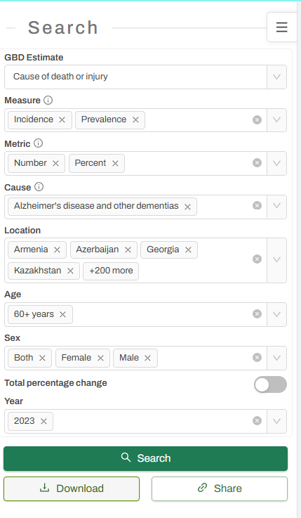
GBD Data Search| Variable | Description | Example values | Data type |
|---|---|---|---|
iso3 |
Three-letter country code | AUS, CHN, USA |
Character |
country |
Country name | Australia |
Character |
income_grp |
Country Income Group | 4. Lower middle income |
Categorical |
continent |
Continent | Asia, Africa |
Categorical |
measure |
Type of measure reported | Prevalence or Incidence |
Categorical |
sex |
Sex | Male, Female, Both |
Categorical |
metric |
Unit or scale of the value | Number or Percent |
Categorical |
val |
Reported numeric value | Numeric | |
geometry |
Spatial boundary data for mapping | multipolygon |
Geometry |
5.3.3 Your turn: Inputs
If you have any trouble, please raise your hand, one of the facilitators will come to assist you.
- Open
./examples/exercises/13-gbd60plus.R - Add three
selectInput()for users to selectsex,measureandmetric. - Define the
reactive expressionto filter the data based on the selected inputs. - You can find the solution in
./examples/solutions/13-gbd60plus-solution.R
5.3.3 Your turn: Inputs - Solution
## Filter for sex
selectInput(
inputId = "selected_sex",
label = "Select Sex:",
choices = levels(gbd_60plus$sex),
selected = "Both"),
## Filter for measure
selectInput(
inputId = "selected_measure",
label = "Select Measure:",
choices = levels(gbd_60plus$measure),
selected = "Prevalence"),
## Filter for measure
selectInput(
inputId = "selected_metric",
label = "Select Metric:",
choices = levels(gbd_60plus$metric),
selected = "Percent")5.3.4 Your turn: Reactive Expression - Solution
- Define the
reactive expressionto filter the data based on the selected inputs.
5.3.5 Building the map output
leaflet supports various types of features, and different layers
You can refer to the documentation for more options: https://rstudio.github.io/leaflet/articles/shiny.html
Using leafletOutput and renderLeaflet to create a reactive map output in your Shiny app.

13-gbd60plus.R
5.3.5.1 Building the map output
- Step 1: create the leaflet map object
- Step 2: Add the choropleth layer using
addPolygons()
5.3.5.1 Building the map output
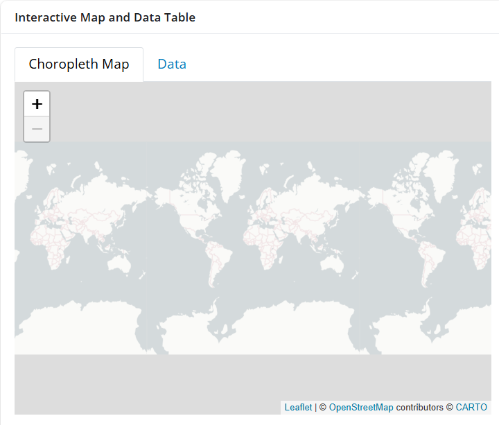
Step1 - Basemap
5.3.5.1 Building the map output
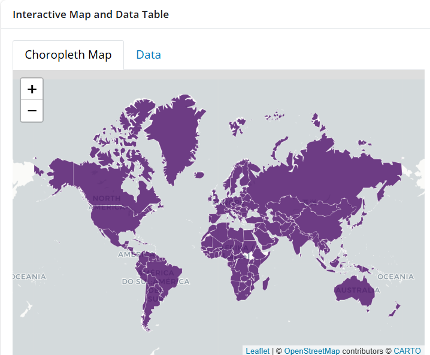
Step2 - addPolygons
5.3.5.2 Building the map output
Step 3: Add a color palette that reflects the value, and change the fillColor in addPolygons().
output$choropleth_map <- renderLeaflet({
map_data <- filtered_data()
pal <- colorNumeric(
palette = "Purples",
domain = map_data$val,
na.color = "#f0f0f0")
leaflet(map_data) |>
addProviderTiles(providers$CartoDB.Positron) |>
addPolygons(
fillColor = ~pal(val),
fillOpacity = 0.8,
color = "white",
weight = 0.5)
})5.3.5.2 Building the map output
Step 3: Add a color palette that reflects the value, and change the fillColor in addPolygons().
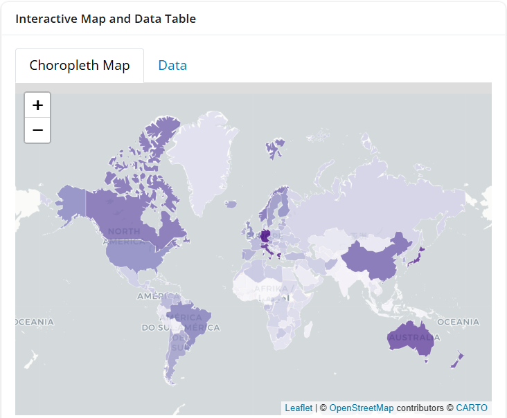
5.3.5.3 Building the map output
Step 4: Add Legends for the color palette using addLegend()
5.3.5.3 Building the map output
Step 4: Add Legends for the color palette using addLegend()
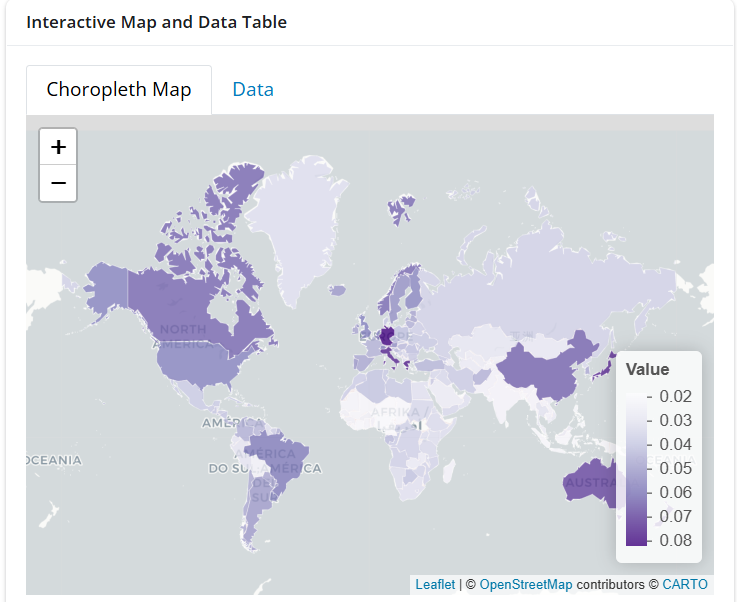
Legend
5.3.5.4 Building the map output
Step 5: Add Pop-up info inside addPolygons.
5.3.5.4 Building the map output
Step 5: Add Pop-up info inside addPolygons.
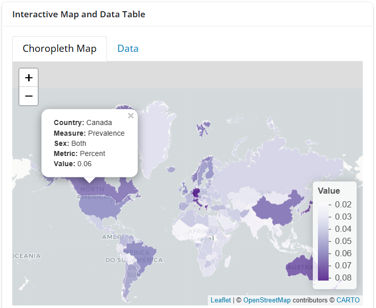
Popup
6. Shiny App with AI
6.1 Building Shiny app with the help of AI - Shiny Assistant
https://gallery.shinyapps.io/assistant/

Shiny Assistant
6.2 Where AI fits in a Shiny app
- Shiny already helps users explore data interactively
- AI can add a conversational layer
- Useful when users do not know which filter, plot, or table they need
- Especially useful for:
- explaining dashboard outputs
- guiding exploration
- translating plain-English questions into data queries
- supporting non-technical research users
6.3 Today’s AI pathway
Note: This is just one of many possible pathways to add AI to your Shiny app.
- Build a basic chat assistant with
{ellmer} - Place the assistant inside a Shiny app with
{shinychat} - Move from “chat about the app” to “query the data”
- Use
{querychat}to translate questions into data filters and summaries
6.4 Introducing {ellmer}
- The R package for working with LLM
- Provides a consistent interface to different model providers
- Supports many LLMs: OpenAI, Anthropic, Google, Meta, Ollama, AWS, Azure, Databricks, Snowflake, and more
- Get help from
Ellmer Assistant: https://jcheng.shinyapps.io/ellmer-assistant/
6.4.1 Set up your environment variable
Copy your token in the .Renviron file, and save it. Then restart your R session.
| Provider | Environment variable name |
|---|---|
| OpenAI | OPENAI_API_KEY |
| Anthropic (Claude) | ANTHROPIC_API_KEY |
| Google Gemini | GOOGLE_API_KEY |
| Azure OpenAI | AZURE_OPENAI_KEYAZURE_OPENAI_ENDPOINT |
| Databricks | DATABRICKS_TOKEN |
| Perplexity | PERPLEXITY_API_KEY |
| Ollama | Usually not required |
| OpenRouter | OPENROUTER_API_KEY |
| DeepSeek | DEEPSEEK_API_KEY |
6.4.2 Minimal {ellmer} chat
Open 14-minichat.R
library(ellmer)
chat <- chat_anthropic(
system_prompt = "
You are an epidemiologist specialising in dementia research.
Explain concepts in plain English for researchers and clinicians.
Use dementia-related examples where helpful.
Do not invent findings, numbers, references, or study results.
Do not provide medical advice.
If unsure, say what information is missing. "
)
chat$chat("Explain the difference between incidence rate and prevalence in dementia epidemiology")6.4.2 Minimal {ellmer} chat

14-minichat.R
6.4.3 The chat inside a shiny app
Open 15-shinychat.R
library(shiny)
library(bslib)
library(ellmer)
library(shinychat)
ui <- bslib::page_fillable(
chat_ui(
id = "chat",
messages = "**Hello!** How can I help you today?"
),
fillable_mobile = TRUE
)
server <- function(input, output, session) {
chat <-
ellmer::chat_anthropic(
system_prompt = "....."
)
observeEvent(input$chat_user_input, {
stream <- chat$stream_async(input$chat_user_input)
chat_append("chat", stream)
})
}
shinyApp(ui, server)6.4.3 The chat inside a shiny app

15-shinychat.R
6.5 From Chat to Data Querying using {querychat}
{querychat} is a package that translates natural language questions into data queries, allowing users to interact with their data using plain English.
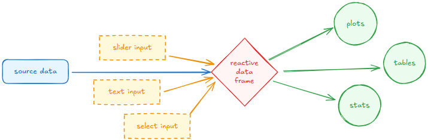
Shiny Parts
6.5 From Chat to Data Querying using {querychat}
{querychat} is a package that translates natural language questions into data queries, allowing users to interact with their data using plain English.
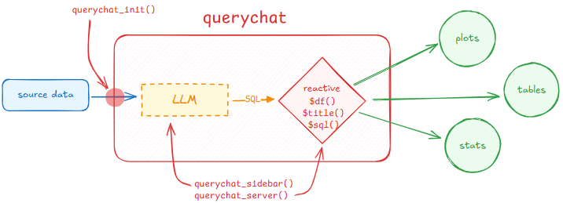
querychat Parts
6.5.1 Basic querychat app
Open 16-querychat-basic.R

16-querychat-basic.R
6.5.1.1 Step 1: Initialize QueryChat
Open 16-querychat-basic.R
library(shiny)
library(bslib)
library(here)
library(dplyr)
library(DT)
library(sf)
library(ellmer)
library(querychat)
# Load data
gbd_60plus <- readRDS(here("data", "alz_gbd_60plus_sf.rds")) |>
sf::st_drop_geometry() # Do not need geometry data here
# Step 1: Initialize QueryChat
qc <- QueryChat$new(
gbd_60plus,
'gbd_60plus',
greeting = 'Hello!',
client = "claude/claude-sonnet-4-5")6.5.1.2 Step 2: Add UI component
Open 16-querychat-basic.R
6.5.1.3 Step 3: Use reactive values in server
Open 16-querychat-basic.R
# Step 3: Use reactive values in server
server <- function(input, output, session) {
qc_vals <- qc$server()
output$sql <- renderText({
qc_vals$sql() %||% "SELECT * FROM gbd_60plus"
})
## DT
output$datadt <- renderDataTable({
qc_vals$df() |>
datatable(
filter = "top", # Enable built-in filters at the top of the columns
options = list(
pageLength = 25, # Control initial page size
autoWidth = TRUE, # Auto adjusting column width
search = list(smart = TRUE, regex = TRUE), # Enable "smart" space-separated searching globally
scrollX = TRUE # Enable horizontal scrolling for wide data frames
)
)
})
}6.5.2 Querychat with context
Open 17-querychat.R

17-querychat.R
6.5.2.1 Step 1: Initialize QueryChat
In addition to 16-querychat-basic.R, to provide context to the user and the LLM:
Add
data_descriptionmarkdown filesAdd
greetingmarkdown filesYou can also add a
extra_instructions = "instructions.md". It is optional but can be helpful for more complex datasets or specific use cases.
6.5.2.2 Step 2: Data Description file
Open ./examples/17-querychat/gbd_60plus_description.md
This dataset contains the Global Burden of Disease Data on Incidence and Prevalence of Alzheimer’s Disease and other dementias (ADOD) among people aged 60 years and older worldwide in 2023.
Variables:
| Variable | Description | Example values | Data type |
|---|---|---|---|
iso3 |
Three-letter country code | AUS, CHN, USA |
Character |
country |
Country name | Australia |
Character |
income_grp |
Country Income Group | 4. Lower middle income |
Categorical |
continent |
Continent | Asia, Africa |
Categorical |
measure |
Type of measure reported | Prevalence or Incidence |
Categorical |
sex |
Sex | Male, Female, Both |
Categorical |
metric |
Unit or scale of the value | Number or Percent |
Categorical |
val |
Reported numeric value | Numeric |
6.5.2.3 Step 3: Greeting file
You can use generate_greeting() to generate a greeting message once based on the data and description you provided, and save it as a markdown file.
Modify the .md file where you see fit.
It usually includes:
- greeting the user
- providing a brief overview of the dataset
- offering some example questions to get started.
6.5.2.3 Step 3: Greeting file
Hello! 👋
I'm here to help you explore the Global Burden of Disease Data on Incidence and Prevalence of Alzheimer's Disease and other dementias (ADOD) among people aged 60 years and older worldwide in 2023.
I can filter and sort the dashboard, answer questions about the data, and help you discover insights.
This dataset includes information about disease incidence and prevalence across different countries.
Let's dive in!
##### Explore the data
<ul>
<li>[Show me the top 10 countries by prevalence]{.suggestion}</li>
<li>[What continents are represented?]{.suggestion}</li>
<li>[How many records are in the dataset?]{.suggestion}</li>
</ul>
##### Compare groups
<ul>
<li>[Show me the difference between male and female incidence rates]{.suggestion}</li>
<li>[Compare high income OECD countries to low income countries]{.suggestion}</li>
<li>[What's the average prevalence by income group?]{.suggestion}</li>
</ul>
##### Filter the dashboard
<ul>
<li>[Show only high income countries]{.suggestion}</li>
<li>[Filter to prevalence measures]{.suggestion}</li>
<li>[Show records for Asia only]{.suggestion}</li>
</ul>
##### Ask research-style questions
<ul>
<li>[Which countries have the highest prevalence values?]{.suggestion}</li>
<li>[Which countries have the highest incidence values?]{.suggestion}</li>
<li>[Summarise the main differences by income group]{.suggestion}</li>
</ul>7. Independent Hands-On Exercise
7.1 Build Your Own Shiny App
If you have any trouble, please raise your hand, one of the facilitators will come to assist you.
Use the GBD Data provided
data/alz_gbd_agegp_sf.rdsor your own dataCombine what we learned today
Build your own R Shiny app!
About the data
- Similar to the previous
gbd_60plusdataset, contains the Global Burden of Disease (GBD) Data on Incidence and Prevalence of Alzheimer’s Disease and other dementias (ADOD) with geometry data. - With additional
agevariable that categorizes the population into different age groups (60-64, 65-69, 70-74, 75-79, 80-84, 85-89, 90-94, 95+)
- Similar to the previous
8. Group Sharing and Wrap-Up
8.1 Share Your App
You’re invited to share with the group:
- 📌 Which dataset did you use?
- 🎛️ What inputs did you add?
- 📊 What does your visualization show?
- 🌟 Any stretch goals you tackled?
- ❓ Any challenges or questions?
8.2 Next Steps
| Topic | Resource |
|---|---|
| Shiny official docs | https://shiny.posit.co/ |
| Mastering Shiny (book) | https://mastering-shiny.org/ |
| Shiny cheat sheet | https://shiny.posit.co/r/articles/start/cheatsheet/ |
| Modules & engineering | https://engineering-shiny.org/ |
LLM integration (ellmer) |
https://ellmer.tidyverse.org/ |
| Awesome Shiny Extensions | https://github.com/nanxstats/awesome-shiny-extensions |
8.3 Thank You!
- Rory Chen, MSc
- Ana W. Capuano, PhD
- Sarah Bauermeister, PhD
- Ashleigh Vella, PhD
- Nikita Keshena Husein
- Mai Ho
“The best way to learn Shiny is to build something you actually want to show people.”
Slides: https://rorychenxy.github.io/aaic2026-shiny-research/slides/aaic-shiny-research.html Repository: https://github.com/RoryChenXY/aaic2026-shiny-research